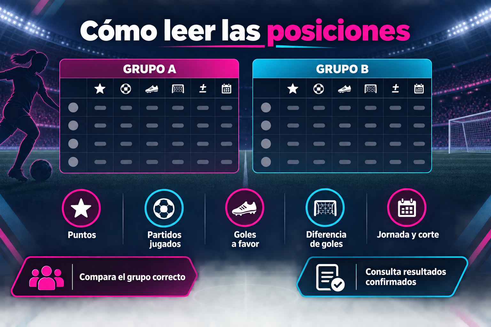

Datos confirmados y fecha de corte
Esta página explica cómo interpretar la tabla de posiciones de Liga MX Femenil y se mantiene separada de la competencia varonil. Una tabla útil debe indicar hasta qué jornada se revisaron los marcadores: ese corte permite distinguir los resultados confirmados de la programación que todavía puede cambiar.
En una liga de fútbol, dos clubes no siempre han jugado la misma cantidad de encuentros. Por eso la posición por sí sola no cuenta toda la historia: antes de comparar rendimiento, revisa puntos, partidos jugados y el contexto de la fecha.
Cómo leer las posiciones por grupo
Con el formato actual, la fase regular se organiza por grupos. La guía de Liga MX Femenil explica el sistema de competencia; aquí la clave es comparar primero clubes del mismo sector. Una posición de una tabla única de temporadas anteriores no equivale automáticamente a una posición dentro del formato vigente.
- Puntos: son la referencia inicial para ordenar el rendimiento del club.
- Partidos jugados: ayudan a detectar encuentros pendientes o calendarios desiguales.
- Goles a favor y en contra: dan contexto a la producción ofensiva y defensiva.
- Diferencia de goles: permite comparar el balance de anotaciones cuando los puntos coinciden.
- Jornada y corte: muestran qué tan reciente es la información consultada.
Qué puede cambiar el orden
Una victoria suma tres puntos y un empate suma uno. Cuando existe igualdad, conviene revisar partidos jugados, diferencia de goles y el reglamento aplicable antes de sacar conclusiones. Un partido pendiente, una jornada incompleta o una corrección oficial puede mover a varios clubes en el siguiente corte.
Los criterios exactos de desempate y clasificación pertenecen al reglamento de cada torneo. Esta guía no sustituye ese documento ni presenta estimaciones como posiciones confirmadas.